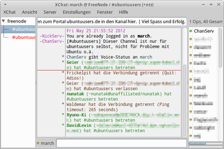

XChat
Dieser Artikel wurde für die folgenden Ubuntu-Versionen getestet:
Ubuntu 16.04 Xenial Xerus
Ubuntu 14.04 Trusty Tahr
Zum Verständnis dieses Artikels sind folgende Seiten hilfreich:
XChat  ist ein grafischer IRC-Client mit umfangreichen Konfigurations- und Erweiterungsmöglichkeiten durch Plugins und Skripte. Als GTK+-Programm eignet es sich vorzüglich für die Desktop-Umgebungen GNOME und Xfce, unter Lubuntu war es bis einschließlich Ubuntu 11.04 bereits vorinstalliert.
ist ein grafischer IRC-Client mit umfangreichen Konfigurations- und Erweiterungsmöglichkeiten durch Plugins und Skripte. Als GTK+-Programm eignet es sich vorzüglich für die Desktop-Umgebungen GNOME und Xfce, unter Lubuntu war es bis einschließlich Ubuntu 11.04 bereits vorinstalliert.
XChat wird seit 2010 nicht mehr entwickelt und ist ab Ubuntu 16.04 nur noch als Xchat-Gnome in den offiziellen Paketquellen. Seit 2012 existiert der unabhängig und aktiv weiterentwickelte Fork HexChat, der ab Ubuntu 14.04 als Alternative ebenfalls über die Paketquellen bezogen werden kann.
|  |
| XChat |
Installation¶
In den Paketquellen bis Ubuntu 15.10 gibt es zwei verschiedene Versionen von XChat. Die erste Version ist eine Projektaufspaltung namens Xchat-Gnome mit dem Ziel, die Benutzeroberfläche einfacher zu gestalten. Sie steht dem Ursprungsprojekt jedoch noch sehr nahe und befindet sich in den offiziell unterstützten Quellen (main). Für die Installation [1] benötigt man das Paket
xchat-gnome
 mit apturl
mit apturl
Paketliste zum Kopieren:
sudo apt-get install xchat-gnome
sudo aptitude install xchat-gnome
Die zweite Version, die seit Ubuntu 16.04 nicht mehr in den Quellen verfügbar ist, zeichnet sich durch größeren Funktionsumfang bzw. Konfigurierbarkeit aus. Folgendes Paket muss installiert werden:
xchat (universe, bis Ubuntu 15.10 )
mit apturl
Paketliste zum Kopieren:
sudo apt-get install xchat
sudo aptitude install xchat
Optional können noch folgende Erweiterungen (Plugins) installiert werden:
xchat-xsys (universe, per Befehl verschiedene Informationen über das System anzeigen lassen. )
xchat-guile (universe, ermöglicht das Schreiben von Plugins mithilfe von Guile
in Scheme.)libnotify-bin (universe, notwendig damit Ballon-Meldungen im Tray angezeigt werden können.)
mit apturl
Paketliste zum Kopieren:
sudo apt-get install xchat-xsys xchat-guile libnotify-bin
sudo aptitude install xchat-xsys xchat-guile libnotify-bin
Für beide Versionen werden Menüeinträge angelegt, im GNOME-Menü sind sie zu finden unter
"Anwendungen -> Internet".
Nach dem ersten Programmstart fragt XChat nach einem Nick und betritt dann automatisch den englischsprachigen Support-Channel #ubuntu auf irc.ubuntu.com. Dies lässt sich natürlich anpassen.
Bedienung¶
Serverliste und Channel¶
In der Serverliste werden die Netzwerke und Channel eingestellt, zu denen sich XChat automatisch oder bei Bedarf verbinden soll. Die mitgelieferte Serverliste ist sehr umfangreich, aber das soll den Benutzer nicht verunsichern. Man kann die Serverliste unter
"Editieren -> Einstellungen -> Netzwerke" bei XChat-GNOME und "XChat -> Netzwerkliste" bei XChat
einsehen und bearbeiten. Desweiteren bestehen diverse Konfigurationsmöglichkeiten, darunter automatisch zu betretende Channel, Benutzerinformation, Zeichenkodierung usw.
Bei der Liste der automatisch zu betretenden Channel ist unter XChat zu beachten, dass die korrekte Syntax verwendet wird. Wie hier beschrieben, werden die Namen der Channels nur durch Kommata, aber nicht durch Leerzeichen getrennt. Konkret schreibt man also zum Beispiel:
#ubuntuusers,#ubuntu-de,#xchat
Sofern ein Channel mit einem Passwort geschützt sein sollte ändert sich die Syntax wie folgt:
#ubuntuusers,#ubuntu-de,#xchat Passwortubuntuusers,Passwortubuntude,Passwortvonxchat
Man kann natürlich auch manuell einem Channel beitreten. Dies funktioniert auf zwei verschiedene Arten:
Befehlseingabe: Kennt man den Namen des Channels, kann man dies durch die Eingabe von
/join #channelnameerledigen.Eine komplette Channelliste für den Server kann man sich durch
"Netzwerk -> Kanäle" in XChat-GNOME oder "Server -> Betrete einen Channel -> Empfange Channelliste" anzeigen lassen, desweiteren Channel nach Stichworten durchsuchen und betreten.
Hinweis:
Beide XChat-Varianten verwenden dieselben Konfigurationen, das heißt u.a., die Serverliste ist identisch. Werden zum Beispiel in XChat-GNOME automatisch zu betretende Channel festgelegt, so werden diese auch beim Start von XChat betreten.
Tastenkürzel¶
Nicht änderbare Tastenkürzel¶
Manche Tastenkürzel sind durch GTK2 vorgegeben, andere sind fest einprogrammiert. Die fest einprogrammierten Tastenkürzel lassen sich nur sehr sehr schwer ändern. Die Tastenkürzel, die GTK2 vorgibt, lassen sich ändern, wenn diese Option in den GTK-Einstellungen erlaubt ist.
| vorgegebene Tastenkürzel | ||
| Tastenkürzel | Funktion | XChat-GNOME? |
| Strg + W | schließt den aktiven Tab | ja |
| Strg + Q | beendet XChat | ja |
| Strg + T | erstellt ein neues Tab, in welchem man dann mittels "/server <Netzwerkname oder IRC-Server>" zu einem Server verbinden kann | nein |
| Alt + A | setzt den Status away, sofern man unter "Einstellungen -> Optionen -> Chatten -> Allgemein" einen default-Grund fürs away-sein angegeben hat. Ein erneutes Betätigen dieses Tastenkürzel hebt den away-Status auf | nein |
| Strg + S | zeigt die Serverliste an | nein |
| Strg + I | löst das aktive Tab heraus, bzw. fügt ein zuvor herausgelöstes Tab wieder ein | nein |
Tastenkürzel anpassen und anlegen¶
Dies soll an einem Beispiel für XChat erläutert werden. Funktion des Tastenkürzels soll sein, zum nächsten bzw. vorherigen Tab zu wechseln:
Man öffnet per Menü
"Einstellungen -> Fortgeschritten -> Tastenkürzel -> Hinzufügen",
wählt dann in der linken Liste die unten neu hinzugekommene Zeile aus. Auf der rechten Seite klickt man in das Feld "Taste" und drückt
Bild ↓ . Nun sollte dort "Page_Down" stehen. Bei Daten 1 und Daten 2 gibt man jeweils 1 ein.
Danach setzt man einen Haken bei "Umschalt" und wählt dann aus der Dropdown-Liste den Eintrag "Change Page". Diese Auswahl muss explizit gemacht werden, auch wenn dort schon "Change Page" zu sehen sein sollte. In der Liste links liest sich die gewählte Zeile nun folgendermaßen (vlnr): "S", "Page_Down", "Change Page", "1", "1".
Das Tastenkürzel ⇧ + Bild ↓ springt nun zum nächsten Tab rechts bzw. unten (je nachdem, ob die Tableiste waagerecht oder senkrecht ist).
Das Gegenteil - also zum nächsten Tab links bzw. oben springen - erreicht man so: auf "Hinzufügen" klicken, die neue Zeile auswählen und als "Taste" "Page_Up"
Bild ↑ einstellen. An dieser Stelle braucht kein Enter gedrückt zu werden; wer es dennoch tut, macht nichts kaputt, sondern stellt
⏎ als Taste ein. Durch Mausklick gelangt man zu Daten 1, wo -1 eingetragen wird und per
Tab ⇆ zu Daten 2 gehen, wo nur 1 eingetragen wird. Nun noch den Haken bei "Umschalt" setzen und aus der Dropdown-Liste ""Change Page"" auswählen. Die Zeile in der Liste links liest sich nun so: "S", "Page_Up", "Change Page", "-1", "1"; das neue Tastenkürzel lautet also
⇧ +
Bild ↑ .
Hinweis:
Änderungen in diesem Dialog werden wirksam, sobald die Liste links geändert wird, d.h. wenn am Schluss "Change Page" ausgewählt wird, kann man sofort testen, ob es auch wirklich funktioniert (hierzu sollte aber das XChat-Fenster und nicht das Dialogfenster den Eingabefokus haben). Das Dialogfenster lässt sich nur durch Klick auf den Schließen-Knopf des Window-Managers schließen.
Skripte und Plugins¶
Für XChat gibt es sehr viele Skripte und Plugins. Skripte bedienen sich der Plugins für bestimmte Programmiersprachen (sog. Sprachplugins). Neben diesen Sprachplugins gibt es noch andere, z.B. für Verschlüsselung oder erweiterte GUI-Kontrolle.
Sprachplugins¶
Zurzeit gibt es sieben Sprachplugins für XChat:
Perl
Python
TCL
Ruby
Javascript
Lisp
Nicht zu vergessen C, allerdings gibt es hierfür keine Skripte. Alle Skripte findet man auf der Skripte-Seite von XChat .
Perl-Skripte sind am populärsten. Es gibt aber auch einige Skripte in Python und TCL. Für das Ruby-Sprachplugin scheinen bisher nur die Beispielskripte zu existieren. Skripte in Javascript und Common Lisp scheinen ebenfalls sehr selten zu sein.
Diese Sprachplugins ermöglichen es einem, alle Fähigkeiten seiner Lieblings-Programmiersprache auszunutzen, um etwas mit XChat zu machen.
Skripte schreiben¶
...ist eigentlich einfach: eine Funktion schreiben, diese per xchat.hook_* als callback für einen bestimmten Event registrieren und auf den Event warten.
Ausführlicher bedeutet das: XChat stellt verschiedene Funktionen für Skripte bereit, diese werden von den Sprachplugins - an die Syntax der Sprache angepasst - "durchgeschleift". Man kann so ziemlich alle Aspekte von XChat beeinflussen: Nachrichten senden, auf Nachrichten jedweder Art reagieren, Channels betreten, zu Servern verbinden usw. Damit XChat von der Existenz eines Skripts erfährt, muss man es registrieren. Dies geschieht durch eine der hook_*-Funktionen. Ab hier wird es sehr programmiertechnisch und man liest am besten bei der XChat-Originaldokumentation nach.
Am einfachsten lernt man, indem man sich bestehende von der Skripte-Seite anschaut.
Weitere Plugins¶
Es gibt zwei Plugins, die die Nachrichten verschlüsseln. Nachrichten, die mit einem Plugin verschlüsselt wurden, können mit dem anderen entschlüsselt werden. Dafür gibt es zum einen mircryption und zum anderen FiSH .
Verfügbare Plugins, die nicht in den Ubuntu-Quellen enthalten sind, kann man hier einsehen.
Laden von Skripten und Plugins¶
Am besten speichert man seine Skripte dort, wo sie von XChat automatisch geladen werden . Auch seine Plugins kann man dort speichern. Man kann sie selbstverständlich auch "von Hand" laden.
Unter XChat-GNOME ist die Plugins- und Skripteverwaltung zu finden unter
"Editieren -> Einstellungen -> Skripte und Plugins".
Dort gibt es bereits installierte Plugins, die per Checkbox aktiviert werden können, weitere können durch "Öffnen" hinzugefügt werden.
Unter XChat geht man zu
"Fenster -> Plugins und Skripte",
wo bereits geladene Plugins und Skripte aufgelistet werden. Das "Entladen" klappt nicht immer bei Skripten, eventuell muss man daher das dazugehörige Sprachplugin entladen.
Die Sprachplugins für Perl, Python und TCL befinden sich meistens im systemweiten Plugin-Verzeichnis von XChat. Ist eines von diesen beim Beenden von XChat geladen, so wird es beim nächsten Start wieder geladen.
Instant Messaging mit XChat¶
Folgendes Paket muss installiert werden:
bitlbee (universe)
mit apturl
Paketliste zum Kopieren:
sudo apt-get install bitlbee
sudo aptitude install bitlbee
Das Paket simuliert für XChat und jedes andere IRC-Programm einen IRC-Server und sorgt für die Umsetzung von IRC in die jeweils richtigen Protokolle.
Nach der Installation richtet man in XChat einen neuen Server ein: Strg + S , dann auf "Hinzufügen" klicken. Man gibt einen Namen für dieses "Netzwerk" ein, klickt dann auf "Edit"; im sich öffnenden Dialogfenster gibt man statt "newserver/6667" "localhost" ein. Den Port muss man nicht unbedingt angeben, da XChat per default auf Port 6667 verbindet und bitlbee standardmäßig auf diesem Port lauscht.
Dateitransfers¶
Im IRC werden Dateien über ein Protokoll namens DCC  übertragen. Hierbei bauen die beteiligten IRC-Programme direkte Datenverbindungen zueinander auf; im Gegensatz zu den normalen Nachrichten, die an den Server gesendet und von dort weitergeleitet ("relay") werden.
übertragen. Hierbei bauen die beteiligten IRC-Programme direkte Datenverbindungen zueinander auf; im Gegensatz zu den normalen Nachrichten, die an den Server gesendet und von dort weitergeleitet ("relay") werden.
Empfang von Dateien¶
XChat zeigt Transfers in einem separaten Fenster/Tab an. Sollte XChat dieses nicht automatisch öffnen, kann man dies von Hand nachholen: "Fenster -> Dateitransfers". Unten sieht man dann die zwei Buttons "Annehmen" und "Abbrechen", welche die Aktion für den ausgewählten Eintrag aus der Liste oberhalb ausführen. Abbrechen kann man immer; aktive und wartende Transfers werden abgebrochen bzw. gar nicht erst begonnen, bereits abgebrochene Transfers aus der Liste entfernt.
Die Dateien werden in dem Verzeichnis gespeichert, das man unter "Einstellungen -> Optionen -> Dateitransfers" angegeben hat. Wenn eine Verbindung beim Empfang nicht zustande kommt, liegt es am Sender.
Senden von Dateien¶
Das Senden von Dateien ist auf mehrere Arten möglich. Außerdem können hierbei häufiger Schwierigkeiten auftreten.
Drag & Drop ins Query Fenster¶
Man öffnet ein "query"-Fenster oder auch einen "Dialog". Hier kann man ganz einfach direkt mit der betreffenden Person Nachrichten (über den Server) austauschen. Nun nimmt man seinen Lieblings-Dateimanager her, navigiert zu der gewünschten Datei, zieht diese dann in das Query-Fenster (drag) und lässt den Mausknopf los (drop). XChat wird die Datei an die betreffende Person senden.
Aus dem Menü heraus¶
Man  rechtsklickt auf einen Nick, entweder aus der Benutzerliste oder im Chatfenster, und wählt dann "Datei senden", woraufhin XChat den bekannten Dateiauswahldialog anzeigt. Man wählt eine Datei, klickt auf "OK" und XChat schickt sie an den Nick, den man zuvor angewählt hat.
rechtsklickt auf einen Nick, entweder aus der Benutzerliste oder im Chatfenster, und wählt dann "Datei senden", woraufhin XChat den bekannten Dateiauswahldialog anzeigt. Man wählt eine Datei, klickt auf "OK" und XChat schickt sie an den Nick, den man zuvor angewählt hat.
Hinweis:
Diese Art von Kontextmenüs können vollständig angepasst werden, und können daher auch bei jedem Benutzer anders aussehen. Wenn der erwähnte Eintrag also nicht vorhanden ist, muss man das Menü anpassen oder wählt eine andere Methode den Transfer zu starten.
Von Hand¶
Ist der Menüeintrag nicht vorhanden und man will aber trotzdem die Datei mit dem Dateiauswahldialog auswählen, kann man folgenden XChat-Befehl verwenden:
/dcc send <nick>
Hierbei muss man natürlich "<nick>" durch den Nick der betreffenden Person ersetzen. XChat öffnet den Dialog und ab da folgt man der obigen Anleitung.
Wenn man den Pfad und Dateinamen genau kennt, kann man auch gleich
/dcc send <nick> "/pfad/mit Leerzeichen/zur/Datei.ext"
benutzen. Die Anführungsstriche braucht man, wenn der Pfad oder der Dateiname Leerzeichen enthalten.
Probleme beim Senden¶
Firewall/Router¶
Lösung: anderer Befehl¶
Die Befehle lauten dann
/dcc psend <nick>
für den Dateiauswahldialog und
/dcc psend <nick> "/pfad/mit Leerzeichen/zur/Datei.ext"
ohne Dateiauswahldialog.
Hinweis:
Hierfür gibt es in der Regel keinen Menüeintrag. Man kann diesen aber selber ergänzen. Gegenwärtig also nur die Befehlsversion.
Lösung: Konfiguration¶
Beschwert sich der Empfänger, dass die Verbindung nicht hergestellt werden konnte, liegt dies oft am Portforwarding der Firewall/des Routers bzw. am Fehlen des Forwarding. Für jeden simultanen auswärtigen Transfer muss man einen Port forwarden. Will man immer nur eine Datei zur Zeit senden, konfiguriert man einen Port. Da über 65000 Ports zur Verfügung stehen, kann man ruhig mehrere aufeinanderfolgende Ports entsprechend konfigurieren.
Um eine Portrange freizugeben (beispielsweise von 5000 bis 5010, also elf Ports), geht man wie folgt vor:
bei XChat unter "Einstellungen -> Optionen -> Dateitransfers -> Netzwerkeinstellungen"
an der Firewall/dem Router. Wie genau das geht, hängt vom Router bzw der Firewall ab. Das Stichwort lautet "port forwarding" oder auch "Ports freigeben"
Bevor man nun Dateitransfers startet, sollte man eine weitere Einstellung in XChat vornehmen. Unter "Einstellungen -> Optionen -> Dateitransfers -> Netzwerkeinstellungen" findet man eine Checkbox "Hole meine IP vom Server". Man sollte sicherstellen, dass hier ein Haken gesetzt ist. (Es kann auch ohne diesen Haken klappen, dies hängt von der Routerkonfiguration ab).
BNCs¶
Klappt ein Dateitransfer trotz korrekter Netzwerk- und Routereinstellung immer noch nicht, so liegt es evtl am BNC , den einer der Teilnehmer verwendet. Mögliche Abhilfe: BNC abschaffen.
Andere Ursachen¶
Es kann sein, dass eine "höhere Gewalt" transferverhindernd eingreift. Vielleicht werden die verwendeten Ports vom ISP eines der Teilnehmer geblockt. Eine weitere Möglichkeit besteht darin, dass das IRC-Programm (eines) der Teilnehmer defekt ist.
Mit Tor anonym chatten¶
XChat unterstützt anonymes Chatten per Tor ohne DNS-Leaking. Wie man den Client konfigurieren muss, steht auf der Seite Tor/Programme zur Nutzung von Tor konfigurieren.
Problemlösungen¶
Auf UTF-8 umstellen¶
Der IRC-Client sollte auf UTF-8 eingestellt werden, da dies auch zum Beispiel im Ubuntuusers-Channel eine Vorraussetzung ist.
XChat ( Alt + X )
Netzwerkliste ( Strg + S )
Eintrag waehlen mit dem man verbunden ist
Editieren
am Ende des Fenster (Combobox) auf "UTF-8 (Unicode)" einstellen
XChat neu starten nicht vergessen!
Browser zum Öffnen von Links ändern¶
XChat ist in Ubuntu fehlerhaft integriert, so werden Links nicht mit dem GNOME-Standardbrowser geöffnet. Um das zu ändern, muss man im Alternativen-System mittels --config für x-www-browser den gewünschten Browser einstellen.
Standardmäßig ist XChat so konfiguriert, dass man Links per Drop-Down Menü öffnen muss. Möchte man nun Links mit einfachem Mausklick geöffnet haben, ändert man in der ~/.xchat2/xchat.conf [2] die Zeile:
gui_url_mod = 4
zu
gui_url_mod = 0
IRC-Links im Firefox mit XChat verknüpfen¶
Hin und wieder trifft man im Internet auf IRC-Links. Diese beinhalten meist einen IRC-Server und einen Channel. Damit sich beim Klick auf den Link XChat öffnet, muss man etwas an der Firefox-Konfiguration verändern.
Ballon Hinweise¶
Wenn die Fehlermeldung
Cannot find 'notify-send' to open balloon alerts. Please install libnotify.
angezeigt wird und unter "Einstellungen -> Optionen -> Chatten -> Warnungen" eines der Kästchen in der Zeile "Show tray ballon on:" ankreuzt ist, muss das Paket
libnotify-bin
mit apturl
Paketliste zum Kopieren:
sudo apt-get install libnotify-bin
sudo aptitude install libnotify-bin
nachinstalliert [1] werden. Nach der Installation steht die Funktion in XChat zur Verfügung.

- Erstellt mit Inyoka
-
 2004 – 2017 ubuntuusers.de • Einige Rechte vorbehalten
2004 – 2017 ubuntuusers.de • Einige Rechte vorbehalten
Lizenz • Kontakt • Datenschutz • Impressum • Serverstatus -
Serverhousing gespendet von